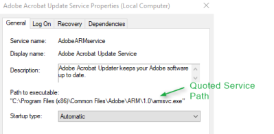

Unquoted Service Paths
Unquoted Service Paths
• Executables in Windows can be run without using their extension (e.g. “whoami.exe” can be run
by just typing “whoami”).
• Some executables take arguments, separated by spaces, e.g. someprog.exe arg1 arg2
arg3…
• This behavior leads to ambiguity when using absolute paths that are unquoted and contain spaces.
example: Consider the following unquoted path: C:\Program Files\Some
Dir\SomeProgram.exe
▪ To us, this obviously runs SomeProgram.exe. To Windows, C:\Program could be the
executable, with two arguments: “Files\Some” and “Dir\ SomeProgram.exe”
▪ Windows resolves this ambiguity by
checking each of the possibilities in turn.
▪ If we can write to a location Windows checks before the actual
executable, we can trick the service into executing it instead.
When this vulnerability
ariseWe need 3 things:
1. An executable path of a Windows service is not enclosed within
quotes(unquoted) and contains one or more spaces in the path
2. Write permissions for any of the folders
containing spaces
3. A way to reboot the service or system in order to execute a payload
What happen when a Service path is UnquotedWindows will search for the service
executable in the path from left to right, and when a space is reached will append .exe at the end of the first word
of the folder
What happen in our example scenario ◇
C:\Program.exe
◇ C:\Program Files (x86)\Canon\IJ.exe
◇ C:\Program Files (x86)\Canon\IJ Scan
Utility\SETEVENT.exe
How to exploit this vulnerabilityWe can place our executable
payload with the name “IJ.exe” file, and when the service starts, it would launch our executable, rather than the
original “SETEVENT.exe”
ATTENTION: We cannot
place our executable payload with the name "C:\Program.exe" because this file would be in the root
directory C:\ and to drop any file in the root directory C:\ we should already have Administrator
privileges
Bibliography:
•
https://medium.com/@SumitVerma101/windows-privilege-escalation-part-1-unquoted-service-path-c7a011a8d8ae